AnyPortrait > Manual > Re-importing a PSD File
Re-importing a PSD File
1.4.2
Sometimes you want to create a character from a PSD file and then later modify the original image.
Until the previous version, there was no way to modify the picture in the PSD file and apply the changed picture to the already created character.
(There was only one way to directly modify the baked Atlas.)
With the features added in version 1.0.6, it is possible to modify the original and import it back to AnyPortrait.
However, the process is very complicated, so please be sure to read the following guide.
It is recommended that you make backups or copies in advance if necessary.
This page covers how to import the PSD file again and points to note.
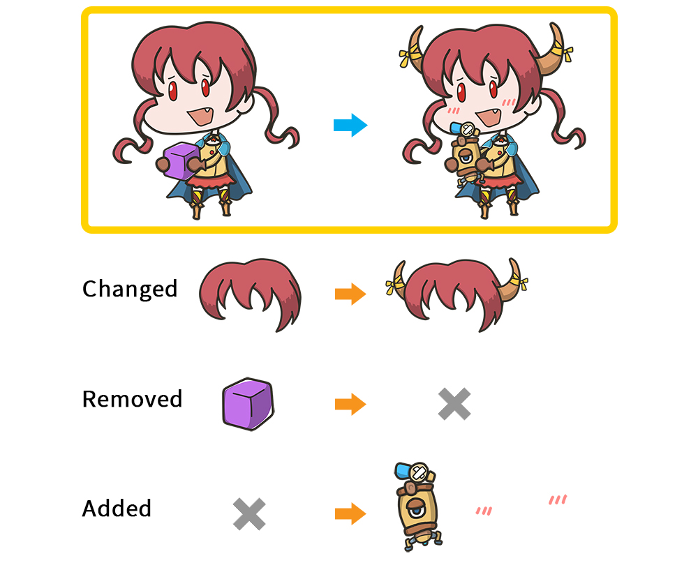
This is a character illustration referenced on this page.
If you look at the girl in the first version of the image, there is no horn on her head, and the girl is holding a purple cube.
The modified version of the image has a horn on the head of the girl, holding a robotic doll instead of a purple cube, and adding emotional effects.
When a PSD file is modified, it must be handled differently in the following cases:
1. When the layer is changed : Since the image size and position of the layer have changed, you need to correct the position.
2. When a layer is removed : The layer is deleted from the reopening PSD. It is not included when creating a new Atlas, and the mesh and mesh groups are maintained with reference to the previous Atlas. It is not automatically deleted, nor does the Atlas referenced by this layer.
3. When a layer is added : a new mesh is created. However, newly added meshes are added at the top of the mesh group.

(1) Click the Import PSD File button.
(2) Press the Reload PSD File button on the first page.

The default configuration of the screen to re-import the PSD file.
1. Import process in step 5 : The current step is displayed at the top of the screen. There are tasks to be performed at each step.
2. Background Color, Outline Color of PSD and Mesh : You can set background color, image outline color of PSD, outline color of mesh in preview screen.
3. Next, Prev, Close, Complete buttons : Move or end each step.

If there are characters created from PSD files, "PSD set" will be added.
(If not, please refer to the following on this page.)
(1) Select the PSD set.
(2) If you want to change the PSD file, press the Change button to select the PSD file to import.
(3) It shows the outline of "Previous Bake setting" and "Attributes of PSD file to import".
(4) Press the Next button to move to the next step.
If the above process is not successful, the Next button is disabled.

On the second page, you need to select and adjust "Mesh group and image to which PSD will be applied", "size and position of PSD file and mesh group".
Most of them are set automatically by default, but you have to manually correct them through the preview screen.
This screen is structured as follows.
1. Target Mesh Group : The mesh group that should be applied.
2. Baked Images : Images that Atlas will overwrite or reference. You can add images that are referenced by the target mesh group.
3. Bake Scale : The percentage of the size that the PSD should apply to the mesh group. PSD Sets the size ratio of the mesh group.
4. Rendering Type : You can set which object is displayed in preview screen.
5. Offset : You can correct the position difference between PSD and mesh group.
6. Preview screen : Output the selected objects. Correct size and position while viewing this screen. You can use the mouse and keyboard to move or zoom the screen in the same way as AnyPortrait's main editor.

The Rendering Type determines whether each of the following is rendered and how it is rendered.
1. Image : You can preview the selected image in the Baked Image list on the left.
2. Mesh Group : Determines whether to output the mesh group.
3. PSD image : Determines the PSD image output method. Switch between the three modes of "Invisible", "Outline only" and "Visible".

If you want to view an image, (1) select the image, (2) turn on the image button only, and turn off the rest.

This is one of the most important steps.
On the preview screen, (1) modify the Offset value so that the image of the mesh group and the PSD are exactly overlapped.
You can input the position value directly. You can increase or decrease the X and Y values by using the buttons on the right.
If the canvas size of the PSD file is modified, it may not overlap exactly with the position compensation value of the constants.
Offset values can contain non-integer real numbers.


You can check whether the images overlap exactly by changing the Rendering Type.
After checking carefully, press the Next button to move to the next step.
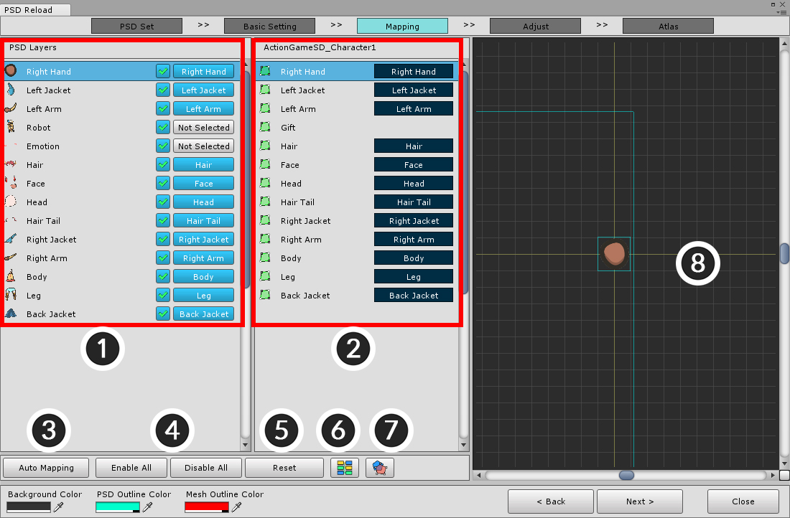
In the third step, you need to set "which mesh / mesh group the layer of the PSD file will be applied to".
All layers of the PSD file appear, and on the right are the sub-meshes and sub-mesh groups of the selected mesh group.
This screen is structured as follows.
1. PSD Layers : Layers of the PSD file. Thumbnails appear, so you can easily check them. You can set whether to bake or which object to overwrite.
2. Objects to be applied : The child mesh and mesh groups of the target mesh group. If set to overwrite, the associated PSD layer name will be printed together.
3. Auto Mapping : Connect automatically based on name and layer order. You have to confirm after use.
4. Enable All / Disable All : Turns Bake on or off for all layers. Inactive layers also lose their connection information.
5. Reset : Initialize all the connection information with the Bake check.
6. Show connection status as color : It shows the connection status of both sides easily by color.
7. Outline preview : When this function is on, it will be rendered as an outline on the preview screen.
8. Preview screen : Output the mesh associated with the image of the selected PSD layer. If PSD layer of group type is selected, nothing is output.

If you click the "Show connection status as color" button, the list background color will be different.
Linked PSD layers and objects appear with the same background color.

In the "preview with outline" button preview screen, the PSD layer and mesh appear as an outline of translucent color.
The color can be changed at the bottom left of the screen.
(Position and size may not match at this stage.)

A way to associate a PSD layer with a target object.
(1) Press the Connect button on the PSD layer.
(2) Press the Select button of the object to connect.
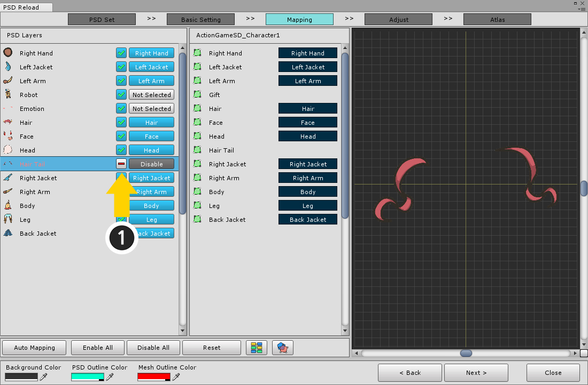
You can prevent the PSD layer from bake by (1) pressing the Enable / Disable button.
Press this button again to activate Bake.
It is useful for initializing the connection information since the connection is initialized when this button is pressed.

(1) Pressing the Auto Mapping button automatically connects the objects to "all PSD layers that are active and not connected".
This function can be misconnected because it compares the name of the object with the name of the layer and connects the two, which are the same or the closest.
Please make sure that it is connected properly.
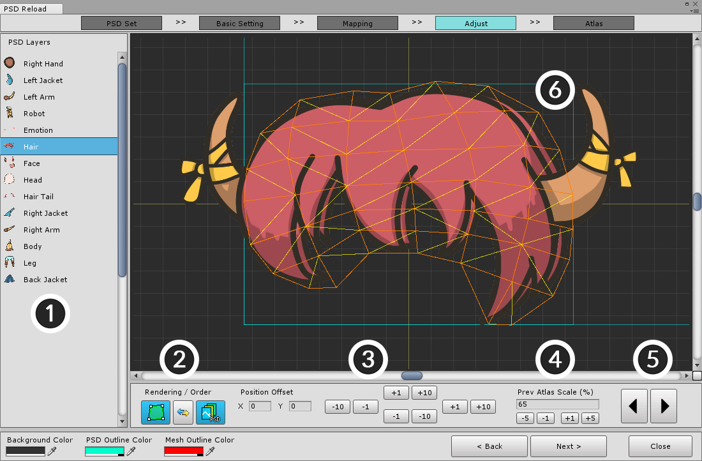
In the fourth step, you need to correct "position and size" for all PSD layers and meshes.
This screen is organized as follows:
1. PSD Layers : These are the PSD layers to be baked.
2. Rendering / Order : Change the rendering method and output order in preview screen.
3. Position Offset : These are the tools that correct the position of the PSD layer for the mesh to be applied.
4. Prev. Atlas Scale : A tool for entering the size of a previously created Atlas. This value is the same for all layers
5. Select Prev/Next Layer button : Select previous, next layer.
6. Preview screen : Output the selected mesh and PSD layer. Outputs the shape of the mesh regardless of the output method.

The method of outputting from preview screen is as follows.
1. Mesh Rendering Method : Switches the rendering method of the mesh to "Not visible", "Show only outline" and "Visible".
2. Toggle Rendering Order : Toggles the order of rendering the mesh first or PSD layer image first.
3. PSD Image Rendering Method : Switch the rendering method of PSD layer image to "Not visible", "Show only outline", "Visible".
Make it easy to see while adjusting your position and size.

This is the most important step.
Select the PSD layer and correct its position.
(The size is set properly by default, but if you need to fix it, please see the information at the bottom of this page.)
(1) Modify using the tools of Position Offset. You can enter a real value.
Make sure the location exactly overlaps through the preview screen.
When you are finished, select the next layer. (2) Select Next button will help you improve your work efficiency.
Check and correct the position for all layers.
Change image filters for preview
1.4.2
When trying to precisely match the positions of the layer image in the PSD and the image in the mesh, you can see that the pixels are too smooth to be distinguished.
This is because a filter that makes the image appear softer is applied by default.
By turning off this filter, you can calibrate the position by checking it with pixel-by-pixel precision.
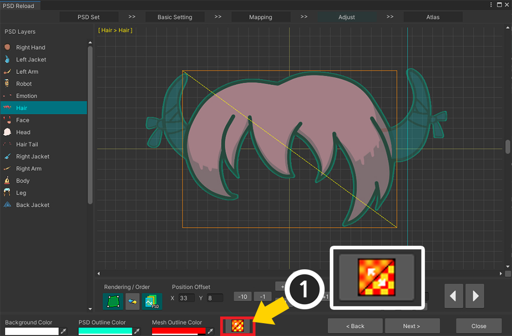
The above button is a function to release the filter of the image to make the pixels look sharp.
This only works for the preview and does not affect the actual texture asset.
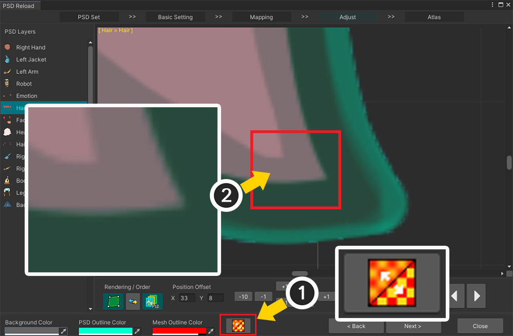
(1) This is a screen to calibrate the position without turning on this function.
(2) When the screen is zoomed in, the image is displayed smoothly, so it is difficult to visually check whether the two images overlap exactly.
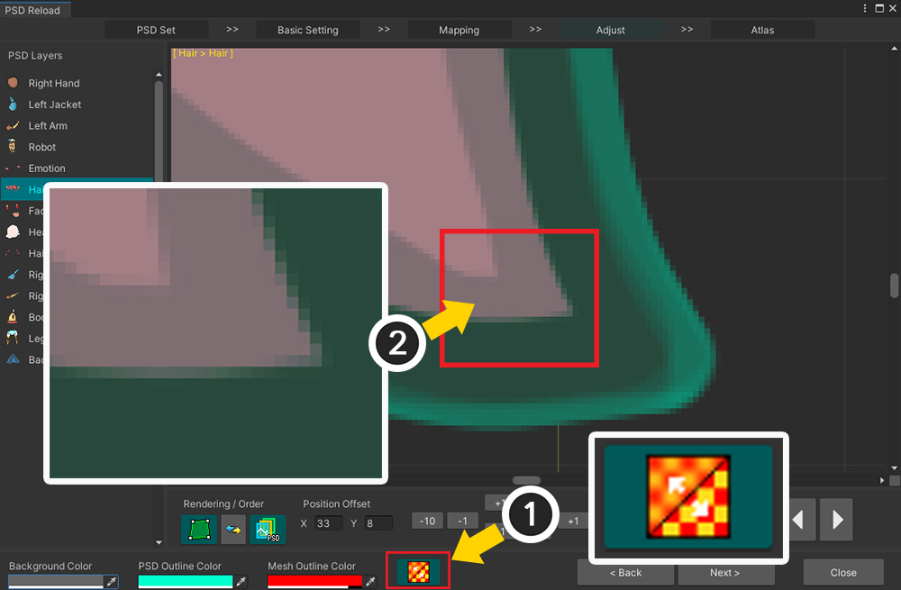
(1) Activate the function by pressing the button so that the pixels are clearly visible.
(2) Now that the pixels in the image are clearly visible, it will be much easier to correct the position.

No additional position, size correction is required for newly added image layers.

The final step is to create and apply the Atlas.
This function is the same as the basic function of importing a PSD file.
(The function of setting the size of the mesh group is excluded.)
Since it is already Bake, it has basically the same value as the previous Atlas Bake setting.
(1) Set the name and path to save of the Atlas texture asset.
(2) Check the Atlas size, number, margin, and border correction settings, and change them if necessary.
(3) Press the Bake button to create Atlas.
(4) Press the Complete button to apply to the AnyPortrait editor.
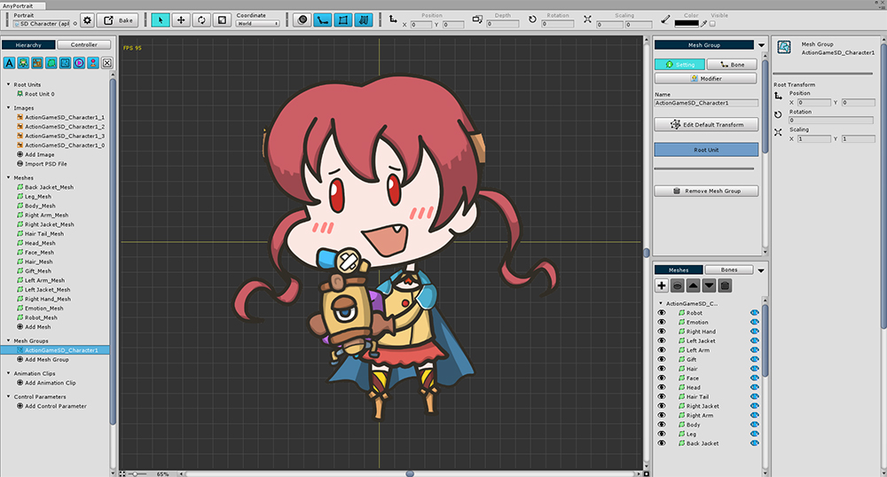
When you return to the main editor, you can see that the updated PSD images are applied.
You can see that existing objects remain or new objects are added, and you may see meshes that need to modify vertices.
Mesh with layer image changed
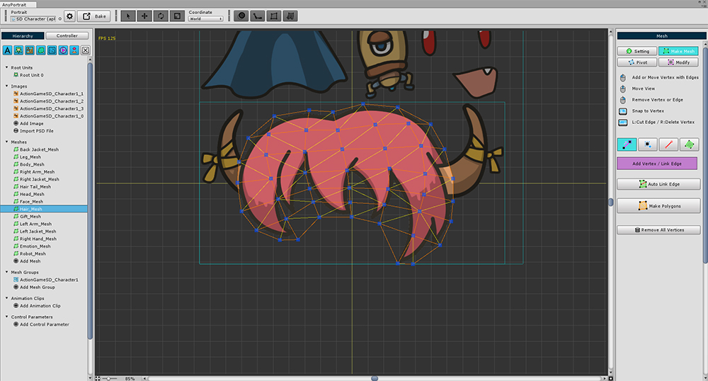

As the image changes, you may need to modify the mesh.
Select the mesh and add or remove vertices to modify them for the new image.
Note.
If a modifier or animation is applied to the mesh, we recommend that you do not delete any existing vertices.
If you add a new vertex or delete only some vertices, the modifier information for the remaining vertices is retained.
Mesh with layer removed

Existing meshes will not be deleted even if no layers exist in the newly imported PSD file.
However, this mesh will continue to use the "old Atlas" because it no longer shares the new Atlas.
In this case, the "old Atlas" will still be used without being deleted, so there might be an optimization problem.
Please refer to the following for more details.
Mesh with layer added
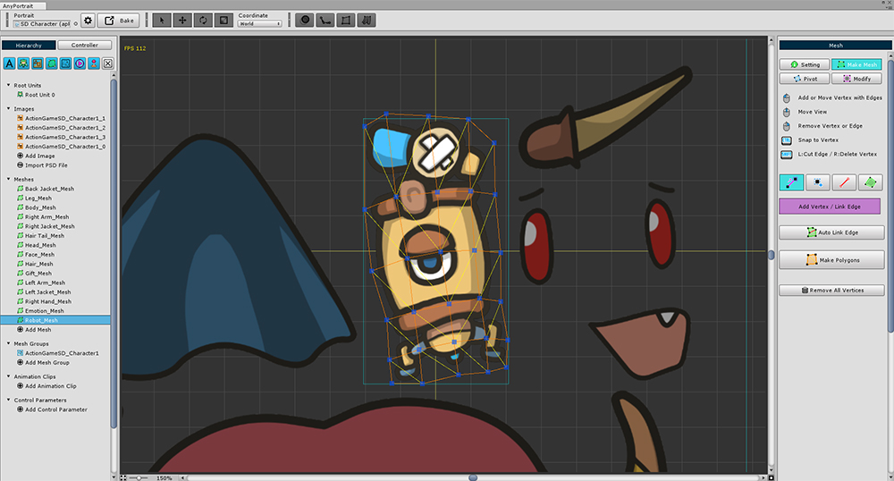
Newly added meshes are created as square meshes by default.
Modify the mesh by adding vertices as you did when you first imported the PSD file.

After completing the above tasks, you will be able to see the characters with the new PSD illustrations.
How Atlas texture assets are saved

If you look at the folder where Atlas images are stored as texture assets, you can see that they are saved as above.
1. Preserved folder : Images that are still in use from existing Atlas images are saved.
2. Unused folder : It saves deleted images that have been overwritten from existing Atlas images.
3. Newly created Atlas texture assets : Newly created Atlas texture assets via PSD re-import.

The Preserved folder is the folder where texture assets that are still used among existing Atlas images are stored.
After bake, texture asset names may change slightly in some cases.
If a PSD file already exists but a new PSD file contains a mesh for the deleted image layer, the mesh must continue to use the existing Atlas.
In this case, Atlas images are moved to the Preserved folder and saved.
This folder should not be deleted by default, but texture assets in this folder are not helpful for optimization.
If the mesh and texture are no longer used, delete the mesh and image from the AnyPortrait editor and delete the texture in this folder.

The Unused folder is the folder where the old Atlas images are overwritten and deleted from AnyPortrait, and their assets are stored.
After the bake, the text "(Unused)" is appended to the name of each texture asset.
If all meshes for the Atlas are updated with layers in the new PSD file, the existing Atlas is no longer used and should be deleted.
In the AnyPortrait editor, the existing Atlas information is deleted, but the texture assets are moved to the Unused folder without being deleted.
This is because it can be repaired and reused if necessary.
However, by default, the assets in this folder will not be used, so it is recommended that users confirm and delete them manually.
Create and import PSD set information manually
Re-importing PSD files is a feature supported since AnyPortrait v1.0.6.
Sadly, "PSD set" information is not generated because the data used in this function is not stored for the character created in the previous version.
However, you can re-import the PSD file by creating your own "PSD set" information.
There are a lot of things to do, but you can do it in the order shown below.
(This includes all manual settings due to other issues.)
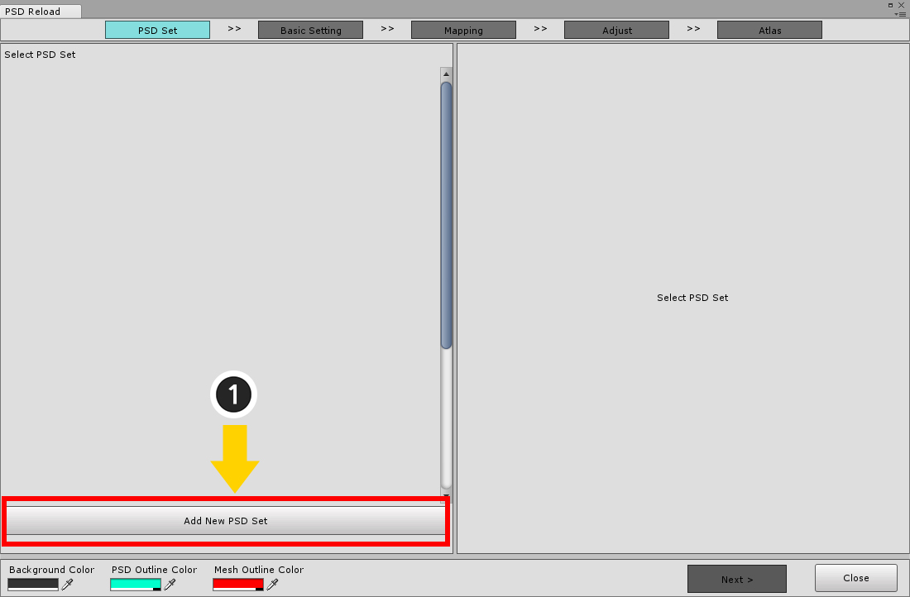
Open the PSD re-importing dialog.
If the PSD set information is not stored, no information is displayed as shown in the above screen.
(1) Press the Add New PSD Set button to create one PSD set.

(2) Select the newly created PSD set.
(If you want to delete it, press the Remove PSD Set button.)

(3) Press the Change button to select the PSD file.
(4) Press the Next button to move to the next step.

The target mesh group and images are not set.
Notice that the mesh group does not appear on the preview screen, and the Next button is disabled.
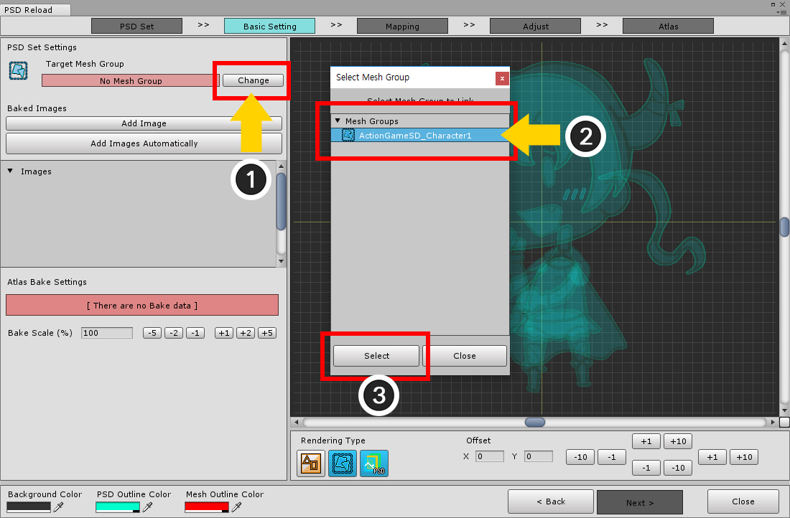
(1) Press the Change button.
(2) Select the mesh group to which the PSD image is applied (3) Press the Select button.
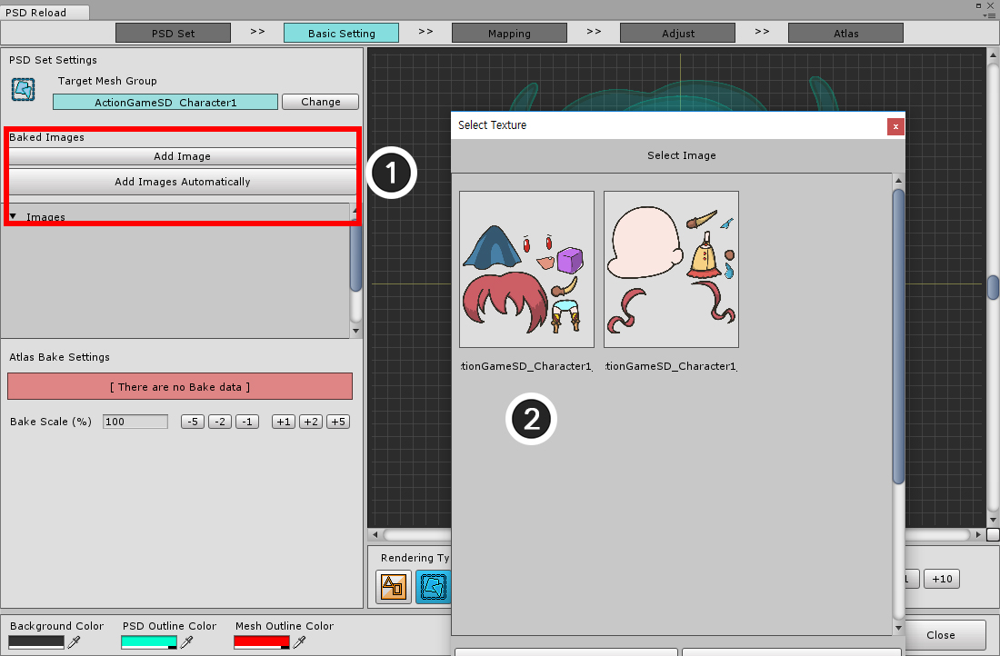
Register Atlas images.
(1) Press the Add Image button, (2) select and add an image.
Or, if you click the Add Images Automatically button, all the images used by the mesh group are automatically registered.

This is the screen where both the mesh group and the image are registered.
Now, as well as the location, size does not fit.
The above screen has a smaller mesh group than the PSD image.

(1) Correct the value of the Bake Scale so that the mesh group and PSD image are the same size.
You can change quickly with the size increment tool.
Find and set the correct size value through the preview screen.

(2) Modify the value of Offset so that the mesh group overlaps the PSD image.
(You can enter a real value.)
When you are done calibrating the position and size of the mesh group and PSD file, click the Next button to go to the next step.

The third step is mapping the PSD layers to the objects in the mesh group.
Since you created a new PSD set, none are connected.

(1) Press the Not Selected button on the PSD layer,
(2) Click the Select button of the target object to make a connection.
You can reconnect the same way if you are already connected.
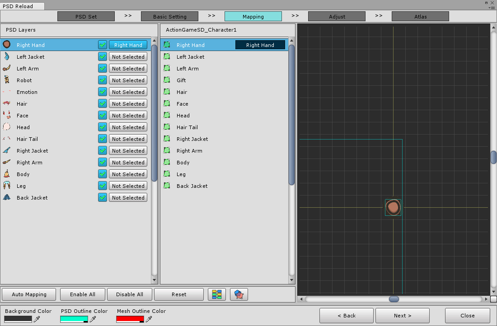
When the layer and target are connected, it appears as the above screen.
The preview screen also renders the mesh associated with the PSD image layer.

For newly added layers, leave them unconnected.

If there are any layers you do not want to import, click the Enable/Disable button to disable them.
This feature has a feature to disconnect, so if you only want to disconnect, disable it and then re-enable it.

(1) Auto Mapping function connects "enabled and not connected PSD layers" with objects automatically.
Since it is a function to connect and compare by name and layer order, sometimes it may be connected incorrectly.
After using this function, please check.
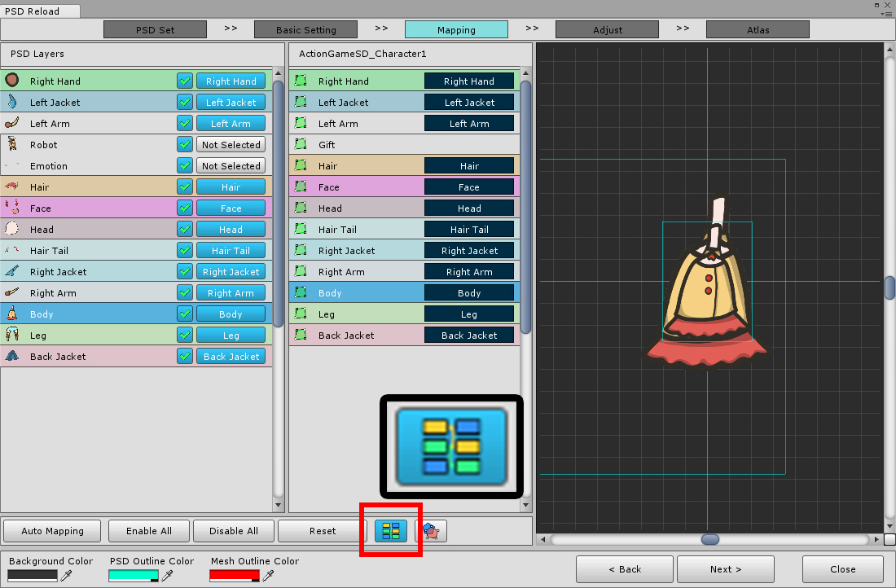
You can easily see how colors are connected by clicking on the "Show Connection Status as Color" button.
When you are finished with the connection, press the Next button to go to the next step.

You must calibrate the position and size of all meshes and PSD layers.
If you create a new PSD set, it will not fit into the position and size.
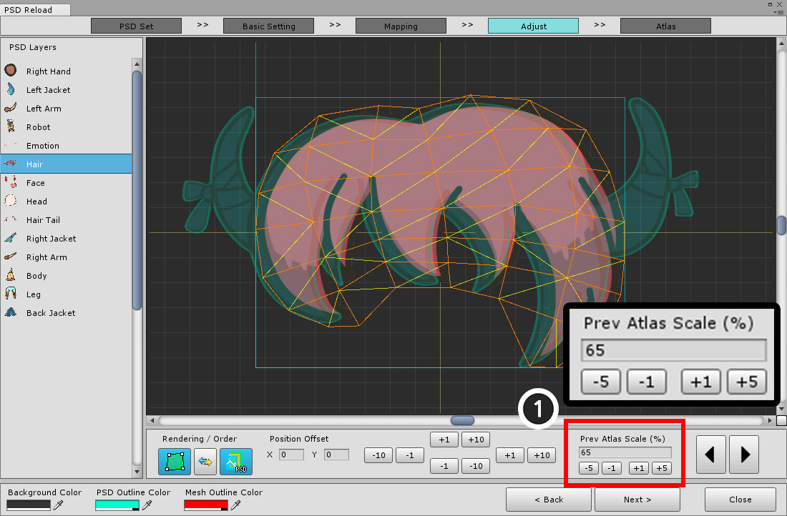
(1) Correct the size by changing the "Prev. Atlas Scale" value.
Since the preview screen modifies the relative size of the PSD layer, it appears as if the size of the mesh changes, as opposed to the value.
This value is the same for all layers, so you only need to set it once.

(2) Modify the Position Offset so that the mesh and PSD image overlap exactly.
If it is confirmed that they overlap exactly, select the next layer to do the same thing.
(3) It is convenient to use Select Prev/Next Layer button.
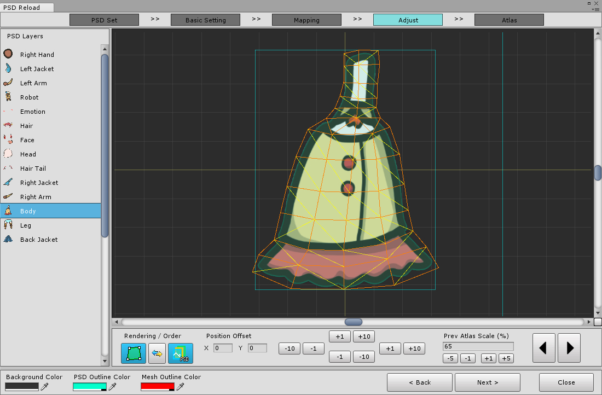
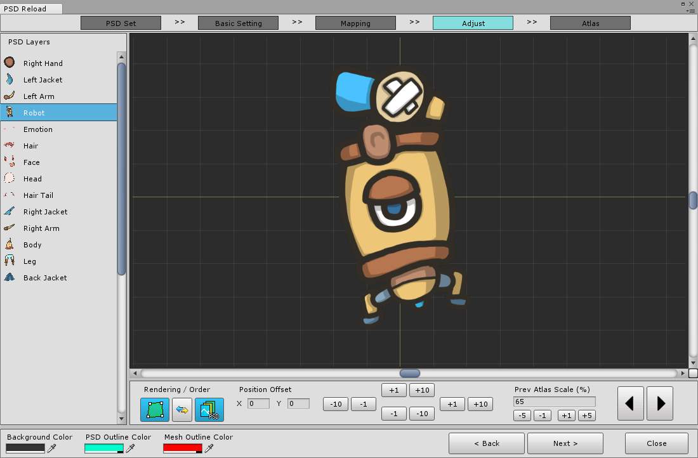
Corrects the position to overlap the mesh for all layers.
You do not have to do anything about the newly added PSD layer.
Press the Next button to move to the next step.

The last step is to create Atlas and Bake it, then apply it to AnyPortrait.
(1) Set the name of the texture asset and set the save path.
You can set it equal to the name of an existing texture asset. (The name will change automatically.)
(2) Set Atlas size, number, margin, and border correction.
(3) Press the Bake button to create Atlas.
(4) Press the Complete button to apply the updated information to AnyPortrait.
How to troubleshoot the PSD file re-import feature
The process of re-importing the PSD file is very complex and each step must be accurate.
If some operations are inaccurate, the output may be strange.
Here are some of the issues that may arise and how to resolve them.
Issue 1: Inaccurate positioning of mesh group
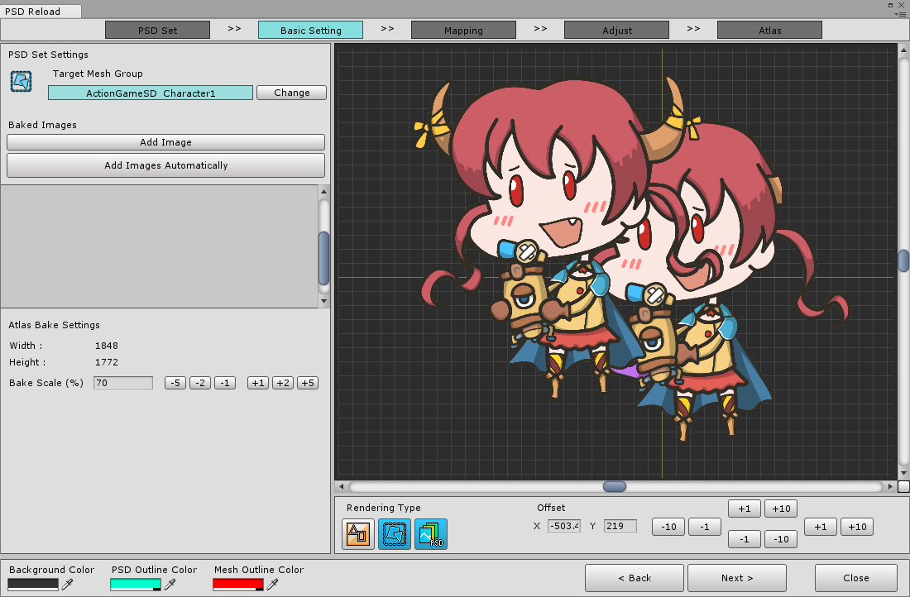
This is a problem that occurs when the default position of the mesh group and the PSD file do not overlap precisely.

You can see that the generated mesh group has moved by the wrong correction value.
Solution
- Remember the set position compensation value and re-import the PSD file using the same size and opposite sign as the compensation value.
If you do not know the position compensation value, you can change the compensation value and import the PSD file again.
- You can fix this by modifying the default location of the mesh group, but in this case information such as bones and modifiers may be misinterpreted.
Issue 2: Incorrect position correction of mesh and PSD image layers

The position compensation of the image layers of the mesh and PSD may not be processed correctly.
In particular, if a PSD file has many layers, you may inadvertently miss a job.
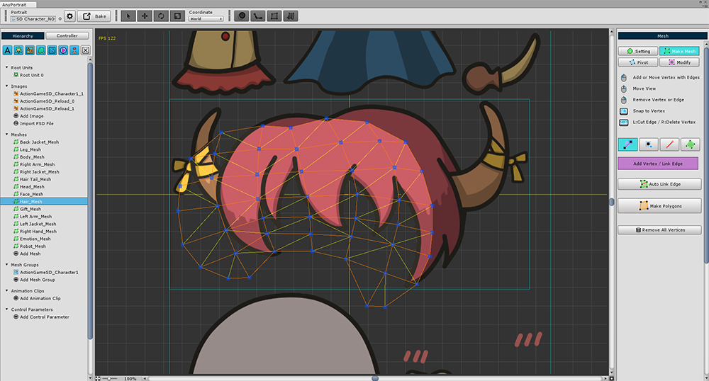

You can see that the mesh's vertices are shifted by the wrong distance and that the misalignment is output incorrectly.
Solution
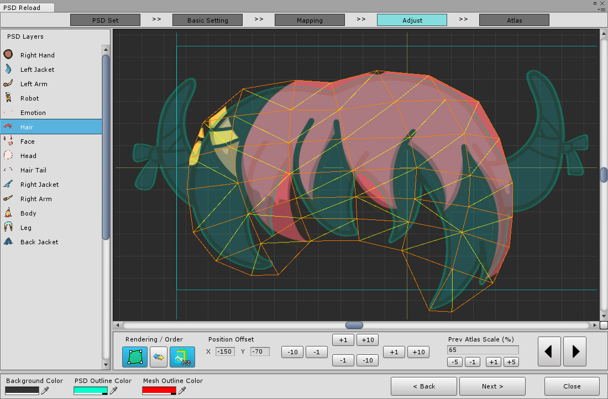
Re-import the PSD file again.
In the step of correcting the position of the layer, watch the preview screen and move the PSD image to overlap the mesh.
Since the texture of the mesh has already been output incorrectly, do not correct the position based on the mesh image.
In this case, the position must be modified relative to the wireframe of the mesh.
Issue 3: Changing the settings of Atlas
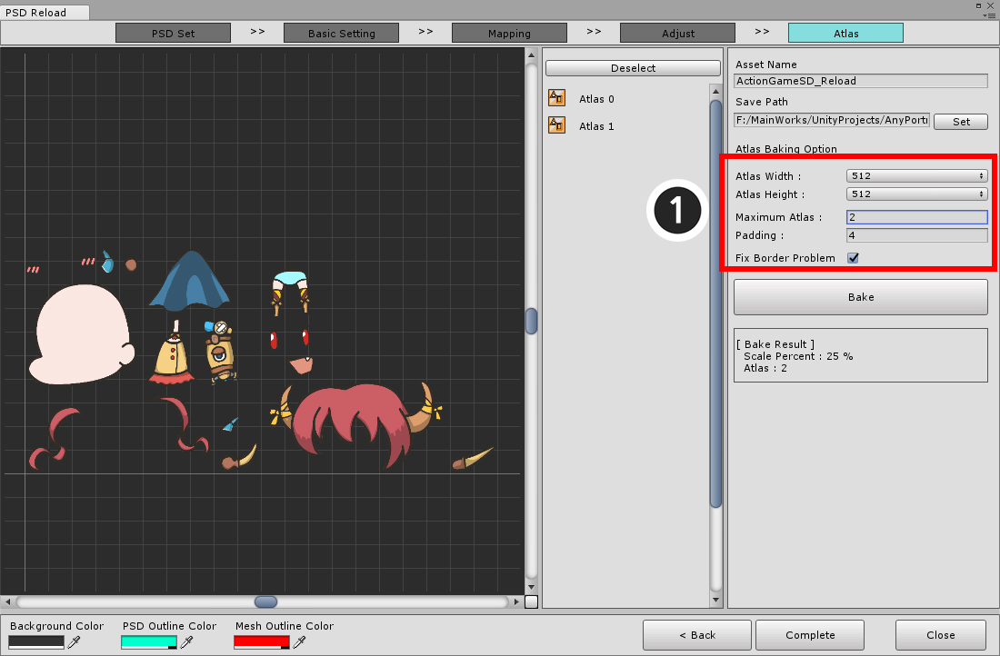
If you want to re-create the Atlas by changing its size or margins, you do not need to be the same as the previous Atlas settings.
You can Bake after changing to the Atlas settings you need in the PSD file re-import dialog.

Even if the resolution is greatly changed, it can be applied without any problem.
Issue 4: Adding a new layer

If you add a new layer and re-import the PSD file, the mesh will be at the top.
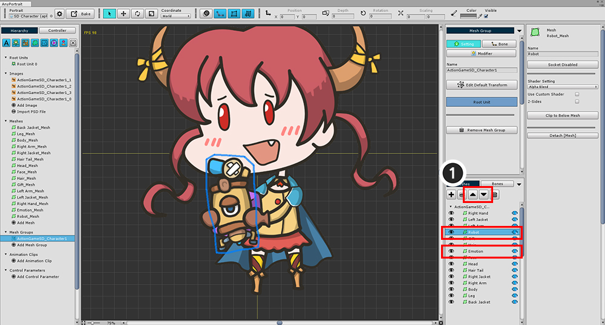
(1) Use the layer reordering function to change the rendering order of the objects appropriately.